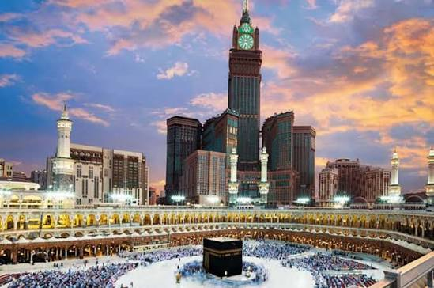
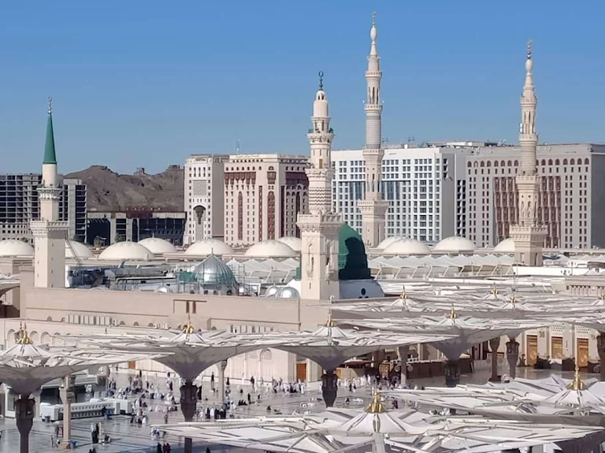
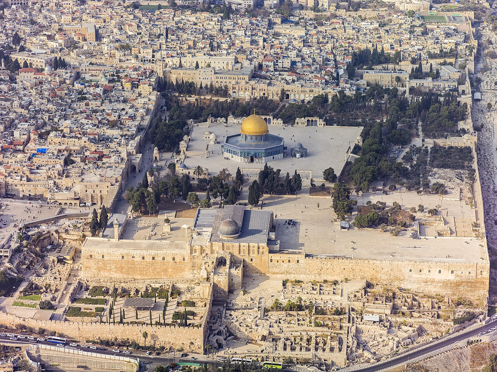

أول بيت وُضع للناس، تتوسطه الكعبة المشرفة. هو قبلة المسلمين وأعظم بقعة على وجه الأرض، الصلاة فيه تعادل مئة ألف صلاة فيما سواه.

مسجد رسول الله ﷺ، ويضم الروضة الشريفة والقبر الطاهر. هو ثاني الحرمين الشريفين، ومركز انطلاق نور الإسلام للعالم أجمع.

أولى القبلتين وثالث الحرمين الشريفين، ومسرى النبي ﷺ ومعراجه إلى السماء. بقعة مباركة في قلب كل مسلم.